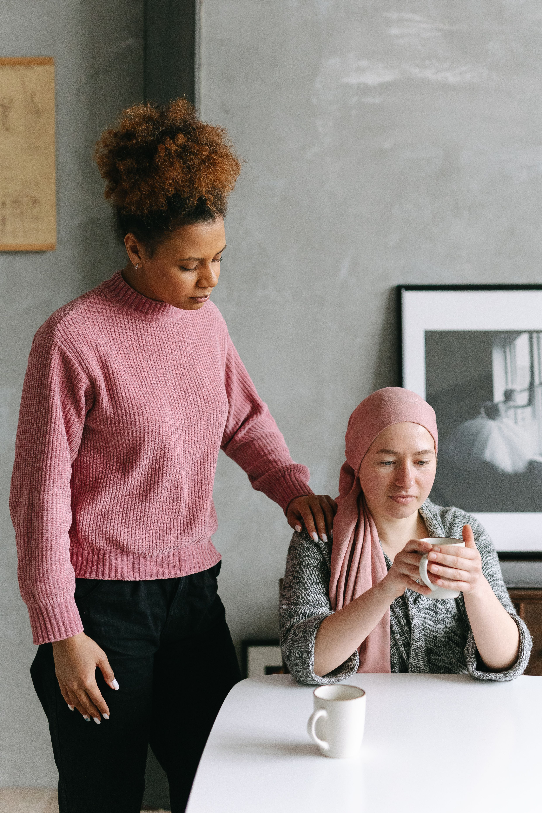

When someone close to you is diagnosed with cancer, you may want to do everything possible to make things easier for them. But knowing what to say, how to help and when to step back can sometimes feel difficult.
There is no single perfect way to support someone. Understanding their needs, respecting their choices and showing up with patience can make a meaningful difference throughout their journey.

Every person's experience with cancer is different. Some may want practical assistance, others may need someone to listen, and some may simply want life to feel as normal as possible. Explore these five topics to understand how you can offer thoughtful and respectful support.

A cancer diagnosis can affect much more than a person's physical health. It can influence their emotions, relationships, education, work, finances and sense of independence.
Treatment experiences also vary. Some people may experience fatigue, pain, nausea, changes in appearance or difficulty with everyday activities. Others may have fewer visible symptoms but still experience considerable emotional stress.
Remember: You don't have to understand everything about cancer to be supportive. Being willing to listen, learn and respect someone's experience is already meaningful.

Sometimes the most helpful support is practical. Cancer treatment can involve appointments, medication schedules, hospital visits and changes to everyday routines. Offering help with specific tasks can reduce some of that burden.
Saying "Let me know if you need anything" is kind, but someone going through treatment may not always know what to ask for. Offering something specific can make accepting help easier.
For example, you could say:
Helping someone does not mean taking control of their life. Ask before stepping in, respect their decisions and allow them to do things independently whenever they want and are able.
Remember: Consistent, practical support is often more helpful than grand gestures. Small acts of kindness can make difficult days a little easier.

Finding the right words when someone you care about has cancer can be difficult. You may worry about saying something hurtful or not knowing how to respond when they are upset.
You do not need perfect words. Often, listening with patience and allowing someone to express themselves without judgement can be more valuable than trying to find an immediate solution.
Remember: Support does not mean having an answer to every difficult question. Sometimes, simply saying "I'm listening" is enough.

Cancer can be especially disruptive when it happens during childhood, adolescence or young adulthood. Alongside treatment, younger patients may be trying to maintain friendships, education, independence and important milestones in their lives.
They may also feel different from their peers or worry about missing out on experiences that matter to them. Support should recognise that they are more than their diagnosis.
Whenever possible, make space for conversations that have nothing to do with cancer. Talk about music, books, hobbies, friendships, future plans or whatever interests them.
Avoid treating every interaction as a discussion about their illness. They should have the freedom to enjoy ordinary moments and continue being themselves.
Remember: A young person with cancer is still a student, friend, sibling, child, dreamer and individual. Make room for every part of who they are.
Cancer support is not limited to the day of diagnosis or the period of active treatment. A person's needs may change throughout their journey, and support can remain important at every stage.
Cancer journeys do not always follow a predictable path. Treatment plans may change, new challenges may arise, or a person may need different kinds of support over time.
Continue listening, respect their choices and allow them to communicate what they need. If circumstances become difficult, encourage conversations with their healthcare team about available support and care options.
Remember: Your support does not have to end when treatment ends. Sometimes, the most meaningful thing you can offer is continuing to show up.
You cannot take away every difficulty someone faces during cancer, and you do not have to have all the answers. What you can offer is patience, understanding, respect and a willingness to be there. Small moments of genuine support can mean more than you realise.
Back to Caregiver Support